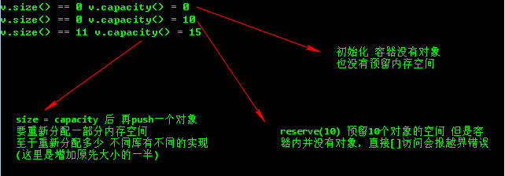

算法设计工具STL
STL概述
STL组成成分
STL主要由
- container - 容器
- algorithm - 算法
- iterator - 迭代器
三大件组成
什么是STL容器
简单说STL容器就是一种数据结构
注意：
C++引入了命名空间概念，在不同命名空间中可以存在相同名字的标识符。using namespace std;- 常用的数据结构和相应头文件
| 数据结构 | 说明 | 头文件 |
|---|---|---|
| vector | 底层是数组，支持随机访问 | <vector> |
| string | 字符处理容器 | <string> |
| deque | 双端队列 | <deque> |
| list | 链表，底层为双向链表 | <list> |
| stack | 栈 | <stack> |
| queue | 队列 | <queue> |
| priority-queue | 优先队列 | <queue> |
| set/multiset | 结点组成的红黑树 | <set> |
| map/mutimap | key-value结构，底层红黑树 | <map> |
什么是STL算法
STL算法是用来操作容器中数据的模板函数，大概100个算法模板函数
void testSort(){
int a[]={2,5,4,1,3};
sort(a,a+5);
printArray(a,5);
}什么是STL迭代器
简单地说，STL迭代器用于访问容器中数据对象。
常用迭代器
- iterator - 指向容器中存放元素的迭代器，用于正向遍历容器中的元素
- const_iterator - 指向容器中存放元素的常量迭代器，只能读取容器11中的元素
- reverse_iterator - 指向容器中存放元素的反响迭代器，用于反向遍历容器中的元素
- const_reverse_iterator - 常量反向迭代器
迭代器常用操作：
- ++ 正向移动迭代器
- – 反向移动迭代器
- * 返回迭代器值
void testFrontIterator(){
vector<int> myv;
myv.push_back(1);
myv.push_back(2);
myv.push_back(3);
vector<int>::iterator it;
for(it=myv.begin();it!=myv.end();++it){
cout<<*it<<endl;
}
}
void testBackIterator(){
vector<int> myv;
myv.push_back(1);
myv.push_back(2);
myv.push_back(3);
vector<int>::reverse_iterator rit;
for(rit=myv.rbegin();rit!=myv.rend();++rit){
cout<<*rit<<endl;
}
}常用的STL容器
顺序容器
vector 向量容器
它是一个向量类模版。向量容器相当于数组，操作起来和数组的优缺点一样
定义方式
vector<int> v1; // 定义元素为int的向量v1
vector<int> v2(10); // 指向向量v2的初始大小为10个int元素
vector<double> v3(10,1.23); // 指向v3的10个初始元素的初值为1.23
vector<int> v4(a,a+5); // 用数组a 0～4共5个元素初始化v4vector提供了一系列的成员函数
- empty() 判断当前向量是否为空
- size() 返回当前容量中实际元素个数
- [] 返回指定下标元素
- reserve(n) 为当前向量容器预分配n个元素的存储空间
- capacity() 返回当前向量容器在重新进行内存分配以前所能容纳的个数
- resize(n) 调整当前容量容器大小，使其能容纳n个元素
- push_back() 在当前向量容器尾部添加一个元素
- insert(pos,elem) 在pos位置插入元素elem，即将元素elem插入迭代器pos指向位置之前
- front() 获取当前向量容器的第一个元素
- back() 获取当前向量容器的最后一个元素
- erase() 删除当前向量向量容器中某个迭代器或者迭代器区间指定的元素
- clear() 删除当前想向量容器中的所有元素
- begin() 该函数的两个版本返回iterator或const_iterator，引用容器第一个元素
- end() 该函数的两个版本返回... ,引用容器的最后一个位置
- rbegin() 该函数的两个版本返回reverse_iterator或const_reverse_iterator，引用容器的最后一个元素
- rend() 与rbegin反过来关于size和capacity区别
#include <iostream>
#include <vector>
using std::vector;
int main(void)
{
vector<int> v;
std::cout<<"v.size() == " << v.size() << " v.capacity() = " << v.capacity() << std::endl;
v.reserve(10);
std::cout<<"v.size() == " << v.size() << " v.capacity() = " << v.capacity() << std::endl;
v.resize(10);
v.push_back(0);
std::cout<<"v.size() == " << v.size() << " v.capacity() = " << v.capacity() << std::endl;
return 0;
}执行结果

string
string是一个保存字符序列的容器，类似于vector<char>
定义方式
char cstr[]="China!Greate Wall"; // 字符串
string s1(cstr); // s1 "China! Greate Wall"
string s2(s1); // s2 "China! Greate Wall"
string s3(cstr,7,11); // s3 "Greate Wall"
string s4(cstr,6); // s4 "China"
string s5(5,'A'); // s5 "AAAAA"
操作方式
empty() 判断当前字符串是否为空串
size() 返回当前字符串实际字符个数（返回结果为size_type类型）
length() 返回当前字符串实际字符个数
[idx] 返回当前字符串位于idx位置的字符，idx从0开始
at(idx) 返回当前字符串位于idx位置的字符
compare(const string& str) 返回当前字符串与字符串str的比较结果。相等是0，前者小于后者返回-1，否则返回1
append(cstr) 在当前字符串的末尾添加一个字符串str
insert(size_type idx,const string& str) 在当前字符串的idx处插入一个字符串str
find(string& s,size_type pos) 从当前字符串中的pos位置开始查找字符串s的第一个位置，找到返回其位置，若没有找到返回-1
replace(size_type idx,size_type len,const string& str) 将当前字符串中起始于idx的len个字符用一个字符串str替换
substr(size_type idx) 返回当前字符串起始于idx的子串
substr(size_type idx,size_type len) 返回当前字符串起始于idx的长度为len的子串
clear() 删除当前字符串中的所有字符
erase() 删除当前字符串中的所有字符
erase(size_type idx) 删除当前字符串换从idx开始的所有字符
erase(size_type idx,size_type len) 删除当前字符串从idx开始的len个字符实例
void testString2(){
string s1="",s2,s3="Bye";
s1.append("Good morning");
s2=s1;
int i=s2.find("morning");
s2.replace(i,s2.length()-i,s3); // 相当于s2.replace(5,7,s3);
cout<<"s1:"<<s1<<endl;
cout<<"s2:"<<s2<<endl;
}deque 双端队列容器
双端队列容器由若干个块构成，每个块中元素的地址是连续的，块之间的地址是不连续的
定义方式
deque<int> dq1; // 指定元素为int的双端队列dq1
deque<int> dq2(10); // 指定dq2的初始大小为10个int元素
deque<double> dq3(10,1.23); // 指定dq3的10个初始元素为1.23
deque<int> dq4(dq2.begin(),dq2.end()); // 用dq2的所有元素初始化dq4主要函数
empty()
size()
front()
back()
push_front(elem)
push_back(elem)
pop_front()
pop_back()
erase()
clear()
begin()
end()
rbegin()
rend()实例
void disp(deque<int> &dq){
deque<int>::iterator iter;
for(iter=dq.begin();iter!=dq.end();iter++){
cout<<*iter<<" ";
}
cout<<endl;
}
void testDeque(){
deque<int> dq;
dq.push_front(1);
dq.push_back(2);
dq.push_front(3);
dq.push_back(4);
cout<<"dq:";
disp(dq);
dq.pop_front();
dq.pop_back();
disp(dq);
}list 链表
实际是一个双向链表
定义方式
list<int> l1; // 定义元素为int的链表l1
list<int> l2(10); // 指定链表l2的初始大小为10个int 元素
list<double> l3(10,1.23); // 指定l3的10个初始大小的初值1.23
list<int> l4(a,a+5); // 用数组a[0..4]共5个元素初始化14主要操作
empty()
size()
push_back()
pop_back()
remove()
remove_if(cmp)
erase()
unique()
clear()
insert(pos,elem)
insert(pos,n,elem)
insert(pos,pos1,pos2)
reverse()
sort()
begin()
end()
rbegin()
rend()示例
void disp_list(list<int> &lst){
list<int>::iterator it;
for(it=lst.begin();it!=lst.end();it++){
cout<<*it<<" ";
}
cout<<endl;
}
void testList(){
list<int> lst;
list<int>::iterator it,start,end,temp;
lst.push_back(5);
lst.push_back(2);
lst.push_back(4);
lst.push_back(1);
lst.push_back(3);
cout<<"初始lst"<<endl;
disp_list(lst);
it=lst.begin();
start=++lst.begin();
end=--lst.end();
temp=lst.end();
// lst.end(); 在最后位置+1
lst.insert(it,start,end); // start在2的位置，end在3的位置，it在5的位置
cout<<"执行后lst.insert(it,start,end);"<<endl;
disp_list(lst); // 显示将 2 4 1 插入到5前边
}关联容器
关联容器中的每个元素都有一个key（关键字），通过key来存储和读取元素，这些关键字可能与元素所在容器的位置无关，所以关联容器不提供顺序容器中的front()、push_front()、back()、push_back()、以及pop_back()等操作
set/multiset 集合容器/多重集合容器
map/multimap 映射容器/多重映射容器
适配器容器
stack 栈容器
默认底层是deque，用户也可以指定其他底层容器
定义
stack<string,vector<string>> myst; // 第二个参数指定底层容器为vector操作
栈只有一个出口，所以没有迭代器操作
empty()
size()
push(elem)
top()
pop()例子
void testStack(){
stack<int> st;
st.push(1);
st.push(2);
st.push(3);
cout<<"栈顶元素:"<<st.top()<<endl;
cout<<"出栈顺序";
while(!st.empty()){
cout<<st.top()<<" ";
st.pop();
}
cout<<endl;
}queue 队列容器
定义与stack相似
queue容器不允许顺序遍历，没有迭代器操作
操作
empty()
size()
front()
back()
push(elem)
pop()例子
void testQueue(){
queue<int> qu;
qu.push(1);
qu.push(2);
qu.push(3);
cout<<"队头元素:"<<qu.front()<<endl;
cout<<"队尾元素:"<<qu.back()<<endl;
cout<<"出队元素";
while(!qu.empty()){
cout<<qu.front()<<" ";
qu.pop();
}
cout<<endl;
}priority_queue 优先队列
内置函数，需要重新定义优先运算符
总结
- STL
- STL概述 - 三大件 容器 算法 迭代器
- 什么是STL容器
- 什么是STL算法
- 什么是STL迭代器
- 常用STL容器
- 顺序容器
- vector !
- string !
- deque
- list !
- 关联容器
- set
- map
- 适配器容器
- stack !
- queue !
- priority_queue
- 顺序容器
- STL概述 - 三大件 容器 算法 迭代器